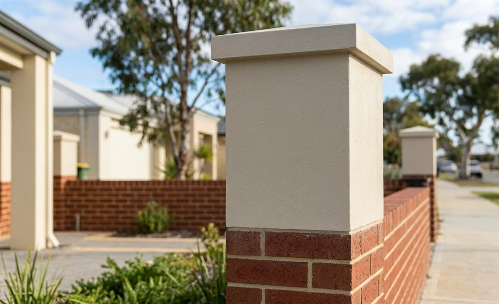

Brick and rendered fences in Perth
What they cost, what your council allows, and what to check on a quote.
- Sending an enquiry costs you nothing
- No obligation, just get more info about what you need
- Perth metropolitan area

What they cost, what your council allows, and what to check on a quote.
